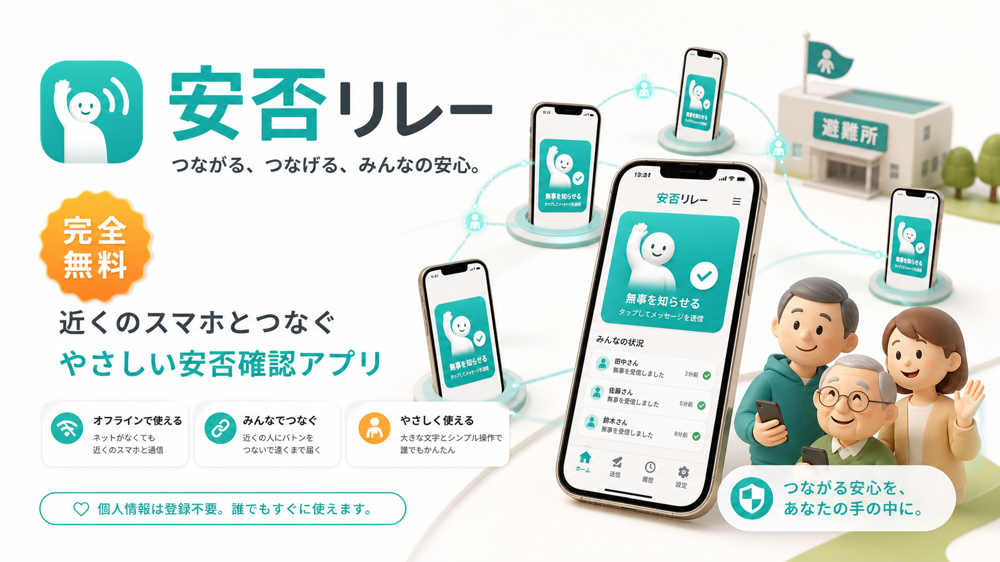
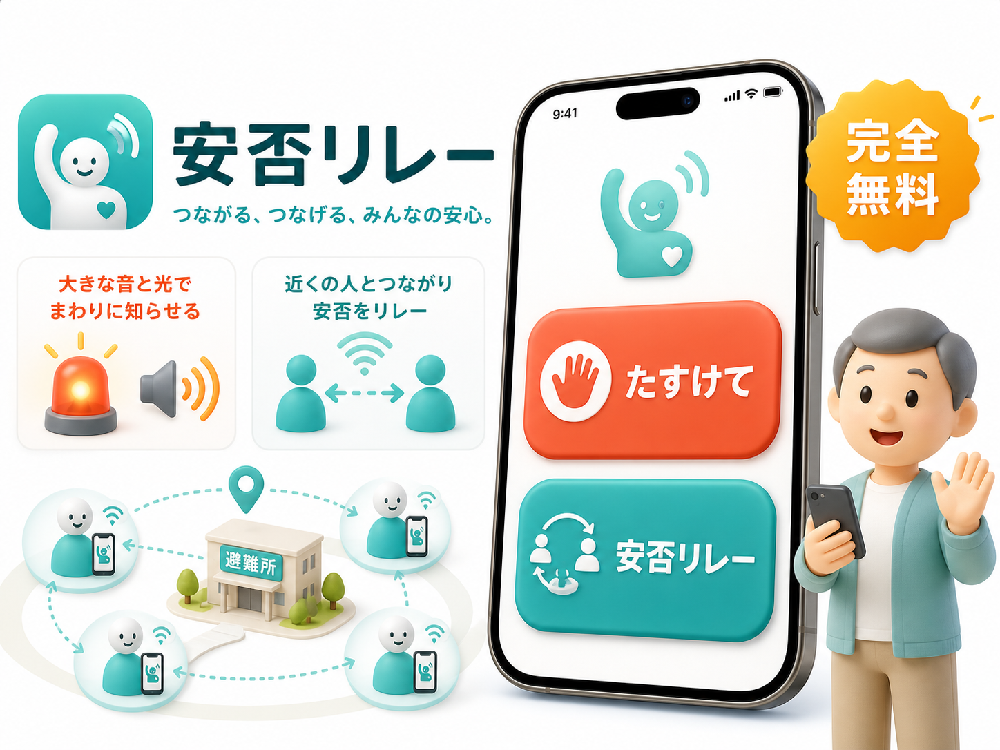
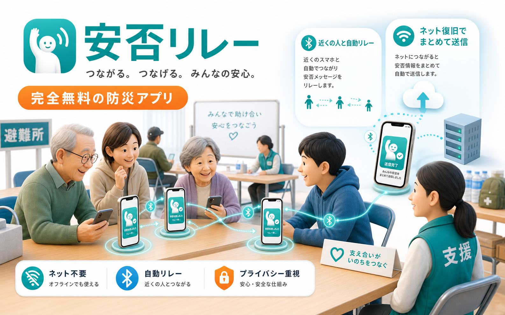

災害時の安否確認を、もっとやさしく。
ネットが切れても、近くのスマホで安否をつなぐ。
安否リレーは、避難所や通信が不安定な場所で、同じアプリを持つ人同士が安否情報を受け渡し、ネット復旧時にまとめて届けるためのiPhone防災アプリです。
- 近くの端末と自動リレー
- ネット復旧時にまとめて送信
- 大きなボタンで迷わない

TWO ACTIONS
非常時に、迷わない。大きな2つの操作だけ。
災害時は細かいメニューを探している余裕がありません。安否リレーは、助けを知らせる操作と、安否をつなぐ操作を大きく分け、慌てている時でも押しやすい画面を目指しています。
音と光で周囲に知らせます。声が出しにくい時でも、近くの人に気づいてもらうための機能です。
同じアプリを持つ近くの人と安否情報を受け渡し、ネット復旧時の送信に備えます。

RELAY
避難所で集まった安否を、近くのスマホが少しずつ運びます。
ひとりの端末だけで完結させず、同じアプリを持つ人が近くにいるたびに情報を受け渡します。どこかの端末がネットにつながれば、保持している安否をBANTEX側へまとめて送信する考え方です。

名前、場所、時間、GPS、安否メッセージを端末に保存します。
同じアプリ同士が近くにいると、保持している安否を受け渡します。
通信が戻った端末から、安否情報をBANTEX側へまとめて送ります。
PRIVACY
集めた安否は、一般ユーザー画面に一覧表示しません。
端末内では保持数や接続ログを中心に表示し、名前や連絡先などの詳細はBANTEX側の管理画面で確認する設計です。災害時の助け合いに必要な情報を扱うため、表示範囲を絞ります。
安否情報は長く残し続けず、一定期間で消える設計にします。
同じレコードIDは重複保存せず、送信集中にも耐えやすくします。
メール添付ではなく、Render上の専用APIとDBテーブルへ送ります。
FREE
防災アプリにつき、完全無料。
安否リレーは、非常時に多くの人が使えることを最優先にします。課金機能や広告で使いにくくせず、いざという時に家族、避難所、地域で広がるアプリを目指します。
FAQ
よくある質問
インターネットがなくても使えますか？
助けを知らせる機能と、近くの端末との安否リレーは、ネットが不安定な場面を想定しています。ネット復旧後にまとめて送信する設計です。
誰でも使える画面ですか？
大きなボタンと短い言葉を中心にし、お年寄りでも迷いにくい画面を目指しています。
いつ公開予定ですか？
現在はiPhone版の公開準備中です。実機検証とApp Store公開準備を進めています。